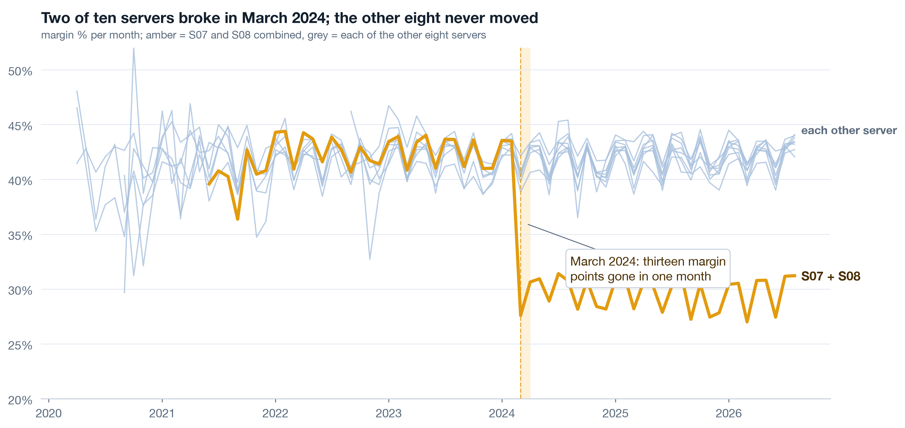
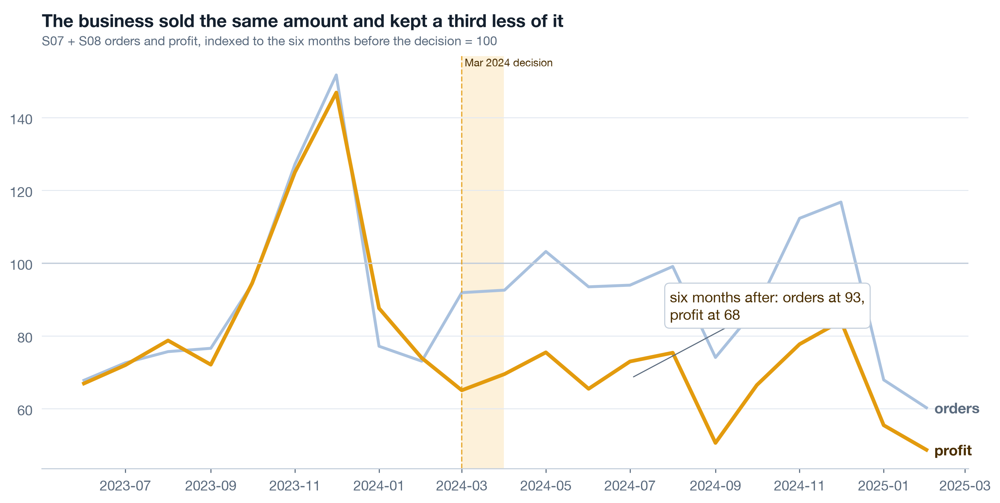
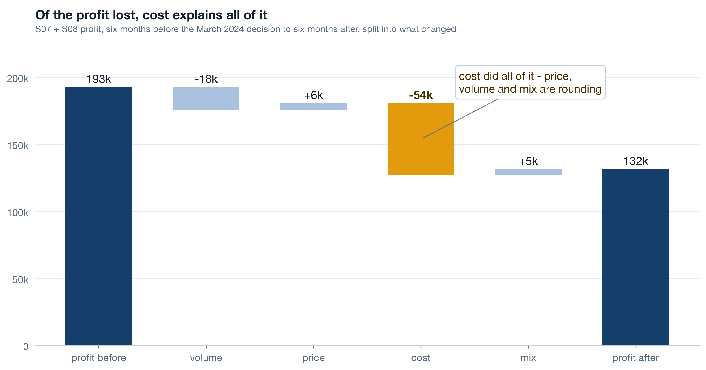
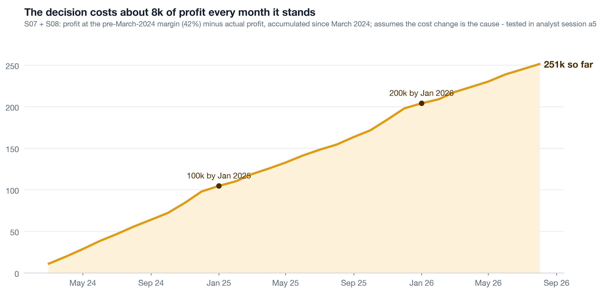
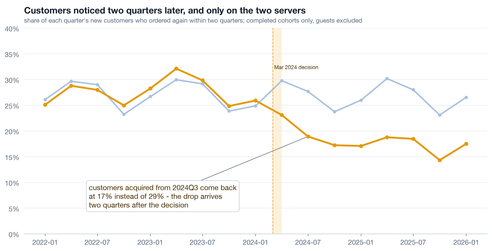
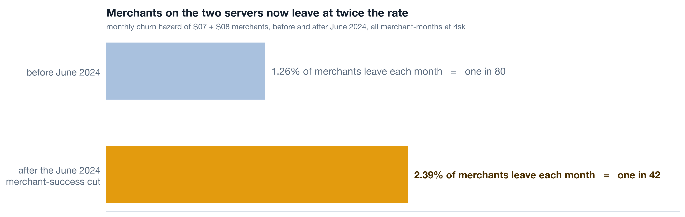
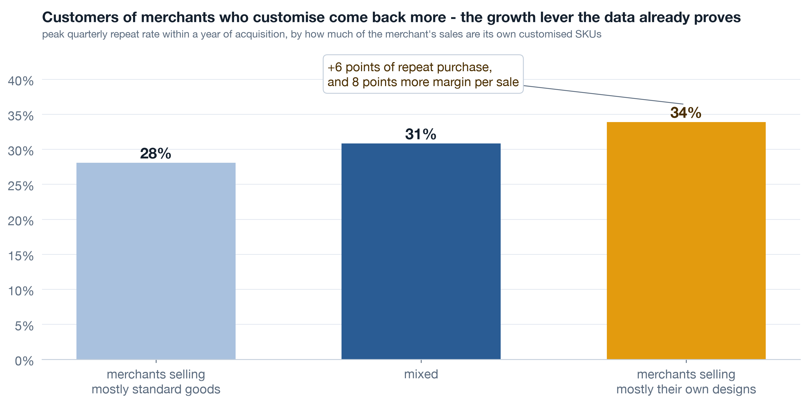
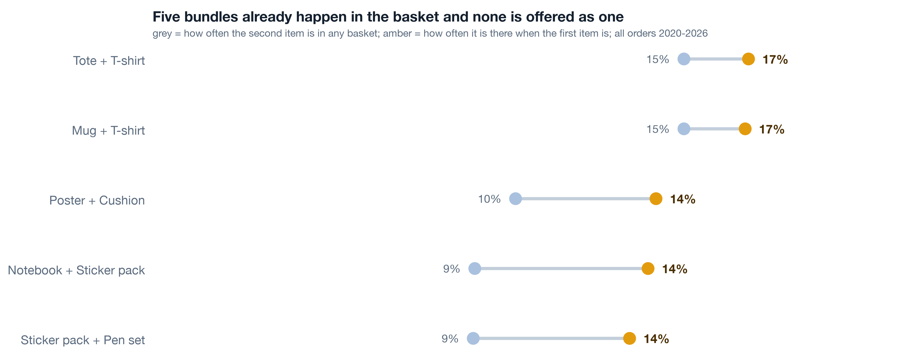

Where this session sits
The chairman storyline has six acts. Session c1 played the first two: what a short window hides, and the platform in one picture. Today is acts three, four and five - the break, the lag, and the turn to what went right. Session c3 plays act six and converts every finding here into a decision with an owner, a number and a review date. The analyst track builds every chart on this page in Python from the same order lines; your job is to read them harder than anyone else in the room.
The break: same volume, thirteen points less margin 10 min live
Un-blend the platform by server and the drift of two points becomes a cliff on two of ten. S07 and S08, the Vietnam servers that carried the 2021-2023 growth, ran at 42.3 percent margin in 2023 and 29.3 percent in 2025. Their revenue went from 686k to 884k to 765k over the same three years - up, then down, never alarming. A profit change has exactly four terms: volume, price, cost and mix. Name the term before you name a cause, because each term points at a different desk.
Live Un-blend it 3 min▶
Ten small charts, one per server, same axes, sixty months each. Eight of them are boring - and boring is the finding, because it tells you the break is not seasonal, not macro, not a platform-wide price move. Two of them step down in the same month. When ten units share a market and two break together, the cause is something those two share and the others do not: in this case, one fulfilment set-up.

Live Volume held, margin fell 3 min▶
Take the three months before the break, December 2023 to February 2024, and the three months after, April to June 2024. Orders: about the same. Average price per unit: about the same. Unit cost: up roughly 22 percent. Margin: down thirteen points. That is a fingerprint, and it rules things out. A demand problem moves volume. A pricing problem moves price. A cost problem moves neither - which is exactly why a growth dashboard cannot see it.

The seasonal trap here is real: compare March to December and you compare a quiet month to a peak. Comparing the three months either side of the decision holds the season roughly still and lets the decision show through.
Live The bridge names the term 3 min▶
Profit change between two periods decomposes exactly into four terms: how much came from selling more or fewer units, from charging more or less per unit, from paying more or less per unit, and from selling a different mix of products. On S07 and S08 the terms read volume -18k, price +6k, cost -54k, mix +5k. Cost is the whole story. Run the same bridge on the other eight servers and the cost term is zero - a second confirmation that the break was a decision, not a market.

| Term | S07 + S08 | Other eight servers | Whose desk |
|---|---|---|---|
| Volume | -18k | ordinary movement | Growth, merchant success |
| Price | +6k | ordinary movement | Pricing, catalogue |
| Cost | -54k | zero | Operations, fulfilment |
| Mix | +5k | ordinary movement | Catalogue, merchants |
Self-study The price of the decision 4 min▶
Describing a break is not the same as pricing it. Take the margin the two servers earned before the shift, 42.4 percent, apply it to every month of revenue since, and the gap between that and the profit actually booked is the cost of the decision: 251k over thirty months, an average of 8.4k a month. The revenue itself kept growing in 2024, which is why nobody with a revenue chart felt any pain.

The number rests on one assumption and it must be said out loud: that the March cost change caused the margin drop rather than coinciding with it. Two things make the assumption defensible here. The other eight servers, same months, same market, show no cost term. And the two-event test in Part 2 shows the customer effect in both surviving-merchant and churned-merchant customers, so the change reached the customer experience itself. Neither is a counterfactual, and the analyst notes say so. A number with its assumption attached survives a hostile board; a number without one does not.
- State the counterfactual. "At the old margin" is a choice; write it on the chart.
- Say where it is tested. The eight quiet servers and the two-event split are the tests here.
- Do not add the retention loss yet. That is a second estimate with a second assumption. Stack them and the board discounts both.
The lag: one decision, three delayed symptoms 9 min live
A cost decision shows up in the margin line the same month. It shows up in customers two quarters later, in merchants two quarters after that, and in the store dimension never, because nobody closes records. Read separately these look like three different problems owned by three different teams. Read on one timeline they are one decision arriving on three different delays.
Live Customers left two quarters later 3 min▶
A customer belongs to the quarter of their first order. Ask what share of each quarterly cohort came back within the next two quarters. On S07 and S08 that share ran at 28.8 percent for the 2023 cohorts and 17.2 percent by 2025. On the other eight servers: 27.4 percent, then 26.8. Same company, same products, same years - the only thing that differs is which servers the customer bought on. The first cohort to fall is the one acquired around September 2024, two quarters after the cost decision.


Live Merchants followed 3 min▶
The platform's own customers are merchants. Count them the way you count customers: new, retained, churned, net, every quarter. The Vietnam servers were the growth engine from 2021 to 2023 - then the merchant churn bar grows through the second half of 2024. The survival view says the same thing more precisely: before June 2024 a key-server merchant had a 1.26 percent chance of leaving in any given month; after it, 2.39 percent. The hazard doubled in the quarter the merchant-success team was cut.


The method matters for one reason a chairman should know: a plain average of merchant lifetimes throws away every merchant who has not left yet, so it flatters the past and hides the present. Survival analysis counts the still-here merchants as "at least this long" and gives you a rate you can compare before and after a date.
Live Two decisions, one drop - which lever? 3 min▶
Here is the honest problem with the story so far. Two decisions landed three months apart on the same servers: the fulfilment change in March and the merchant-success cut in June. The repeat rate fell. Which lever pulled it? Split the key-server customers by whether their merchant survived to 2026. If the drop lives only among customers of merchants who later left, the June cut did it - customers left because their shop did. If it shows in customers of surviving merchants too, the buying experience itself changed.

| Customers of ... | 2023 cohorts | Late 2024 onward | Reading |
|---|---|---|---|
| merchants still trading in 2026 | 29.2% | 17.7% | the experience changed for customers whose shop never left |
| merchants that churned | 27.4% | 15.5% | slightly lower again - the June cut compounded it |
So the March decision reached the customer, and the June decision made it worse. That ordering is what c3 needs, because it means reversing or re-pricing the fulfilment change is the first lever and restoring merchant success is the second - not the other way round, and not either alone.
Self-study Stores that exist and stores that sell 3 min▶
The store dimension says 342 stores exist. A store exists in that table until someone closes the record, and nobody closes records - roughly 65 percent of stores that have not sold in a year are still marked open. Define active as at least one order in the trailing 90 days and the share of dormant stores climbs through 2025, concentrated on the key servers. Dormancy is the earliest merchant-churn signal there is: a merchant stops selling long before anyone files paperwork.

- Count active, not existing. Existence in a table is a fact about the table.
- Status as events, not fields. A field that gets overwritten has no history; an event that gets appended does. c3 puts this in the tech table.
- Dormancy is a list, not a chart. Each dormant store on a key server is a merchant somebody should call this week.
What went right: the turn 12 min live
Same data, same rigour, opposite direction. The findings that follow were sitting in the order lines for years, unread for the same reason the break was unread: nobody asked. Two of them are worth more than the break cost. The point of the turn is not to soften the room; it is that a board will spend money on growth it has just seen evidence for, and will not spend it on a lecture.
Live Customisation retains 3 min▶
Every product line exists twice: the platform's standard version and the merchant's customised version. The customised SKUs earn 8 to 10 margin points more. That alone would be a pricing note. The finding is what happens to the customers: group them by how much of their merchant's catalogue is customised, and customers of high-customisation merchants come back at 33.9 percent within twelve months against 28.1 percent for low-customisation merchants. Better margin and better retention on the same lever is rare; when you find one, it is the growth story.


Live The bundles nobody sells on purpose 3 min▶
Look at what customers put in the same basket without being asked. A mug with a t-shirt. A poster with a cushion. A notebook with a sticker pack and a pen set. Each pair co-occurs 1.3 to 1.6 times more often than chance, and the attach rate - how often the second item appears given the first - sits above the second item's base rate every time. Customers are already assembling these bundles one item at a time. The platform has never priced, promoted or packaged any of them.


One caution on reading lift: a pair with three co-purchases can show a huge lift and mean nothing. The bundle candidates here clear a support threshold first, then lift. Ask your analysts for both numbers, always.
Live The catalogue moved under us 3 min▶
Five categories, fifteen lines, five years. Drinkware and home spiked in 2020 and settled. Stationery has faded every year since 2023. Bags have risen steadily and nobody planned it. A category chart by year shows the shape; a slope chart of 2021 against 2025 by line shows which lines to lean into and which to stop defending. The catalogue is the one part of the business that changed for the better without a decision, which means the decision is now overdue.


Self-study The churn was visible in month three 3 min▶
Merchant churn in month thirty was predictable in month three. Take every merchant onboarded by 2023, so all of them have had time to leave or stay, and look at two early signals: months from onboarding to first sale, and revenue in the first ninety days. Merchants that later churned took a median 3.8 months to make a first sale; merchants still trading took 1.3. Median first-90-day revenue: 0 for the ones who left, 399 for the ones who stayed. The merchant-success team never had this list. It measured the funeral.

Write the six findings as sentences ★ 8 min · everyone builds
A finding that cannot be said in one sentence with a number in it is not yet a finding. Take the six you heard today and write each one so that a director who missed the session could act on it. Then order them, then cut.
One sentence, one number. "S07 and S08 lost thirteen margin points in March 2024 while selling the same volume." Not "margin by server". The number is the sentence's spine.
Add the grain. Per server, per quarterly cohort, per merchant, per basket. A repeat rate without "per cohort" will be argued about for twenty minutes.
Add the unit. Percent, thousands, months, per month. "Churn doubled" and "hazard 1.26 to 2.39 percent a month" are different sentences; only one can be checked.
Add the confidence and the caveat. "At the pre-shift margin; no counterfactual server." "Sixty-nine days of logins; a snapshot, not a trend." A caveat stated by you is a strength. Found by the board, it is a wound.
Order them for the turn. Break, lag, then the growth findings. The room needs to hear what went wrong before it will fund what went right, and it needs to hear what went right before it will leave the room willing.
Strike any sentence without a decision. If nothing changes whichever way the number falls, it leaves the deck. Keep the chart in the appendix if you must; it does not get a slide.
Try it yourself - this week ◐ 30 min
- Pick one unit of your business where profit moved last year. Ask for the four-term bridge - volume, price, cost, mix - and write down which desk each term points at before you see the numbers.
- Find one metric your company reports as a trailing average. Ask what it would look like as frozen cohorts, and whether last quarter's published number would still be the same today.
- List three things your best customers or partners buy together without being asked. Then check whether any of them is sold as a package. If none is, you have found your bundle programme.
What this session draws on
The findings here are read with a small set of working methods borrowed from data storytelling, decision science, valuation and survival statistics. This page teaches the working core of:
Three questions before you go 🎯 ◐ 90 seconds
1 · A bridge on two servers reads volume -18k, price +6k, cost -54k, mix +5k. A colleague proposes a price rise to recover margin. What does the bridge say?
The bridge exists to name the term before anyone names a cause. Price moved up slightly and volume held; the whole loss sits in cost, and the other eight servers show a cost term of zero. A price rise might recover margin, but it would answer a question the data did not ask and risk the volume that held.
2 · Repeat rates fell for customers of surviving merchants (29.2 to 17.7 percent) and for customers of churned merchants (27.4 to 15.5). What is the right reading?
If the drop lived only among churned-merchant customers, it would be a merchant story. It shows in both groups at nearly the same size, so the March decision reached the customer directly, and the slightly lower churned-merchant figure is the June cut on top. That ordering decides which lever c3 pulls first.
3 · Why does the storyline turn from the breaks to what went right, rather than ending on the price of the decision?
The turn is not a softening and the growth findings carry the same rigour and the same caveats. It is where the decisions live: a board funds growth it has just seen evidence for. End on the price and you get defence; end on the bundles and the customisation lever and you get a budget line.